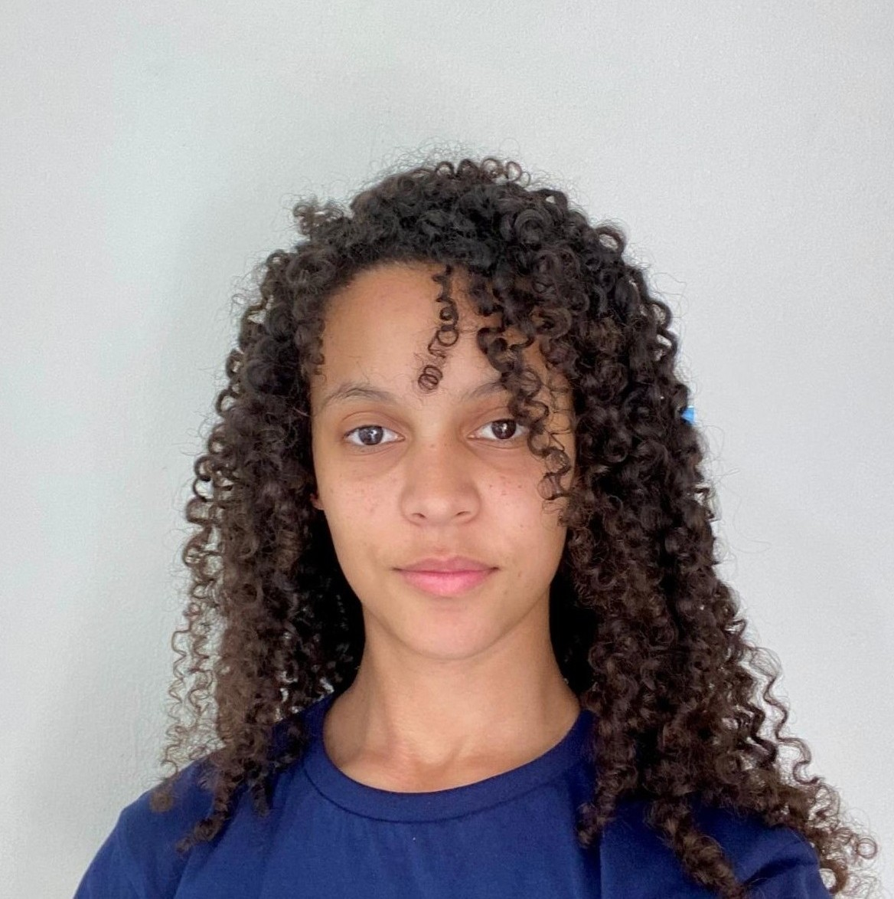

Prazer em Conhecer
Olá! Meu nome é Alinne, tenho 21 anos e sou estudante de Desenvolvimento Web pelo Instituto PROA. Sou apaixonada por tecnologia e acredito no poder que ela tem de transformar realidades, gerar oportunidades e impactar vidas.
Minha jornada como desenvolvedora está sendo construída com dedicação ao front-end utilizando HTML, CSS, JavaScript, React e Tailwind e também com estudos em back-end, explorando Java e MySQL para criar soluções completas e eficientes.
Mais do que escrever código, acredito que programar é resolver problemas de forma criativa, unindo lógica e empatia. Por isso, valorizo muito o aprendizado em projetos práticos, tanto individuais quanto em equipe, onde desenvolvo não só minhas habilidades técnicas, mas também soft skills como comunicação, colaboração e resiliência.
Fora da tecnologia, sou alguém curiosa, que gosta de aprender coisas novas e que acredita que cada desafio é uma oportunidade de evolução. Meu propósito é crescer todos os dias e me tornar uma profissional capaz de criar soluções que realmente façam diferença.
Mapa de Carreira
Desenvolvedor Júnior
No começo, meu foco será dominar fundamentos sólidos de programação, algoritmos, estruturas de dados, POO e boas práticas de versionamento com Git. Quero aplicar clean code e princípios SOLID, participando ativamente de projetos, code reviews e aprendendo com feedbacks.
Soft Skills exigidas para essa carreira:
- Comunicação clara.
- Resiliência.
- Organização.
- Trabalho em equipe.
Roadmap de Aprendizado:
- Algoritmos
- MySQL
- Git/GitHub
- HTML
- CSS
- JavaScript
- SQL
Desenvolvedora Pleno
Neste estágio, quero assumir mais autonomia em tarefas complexas, compreender arquitetura de sistemas e colaborar de forma estratégica. Buscarei domínio em design patterns, testes automatizados e arquitetura limpa, além de começar a atuar como mentora de juniores.
Soft Skills exigidas para essa carreira:
- Pensamento crítico
- Autonomia
- Colaboração proativa
- Aprendizado contínuo
Roadmap de Aprendizado:
- Node.js
- React
- TypeScript
- API
- Performance
- DevOps
- NoSQL
Desenvolvedora Sênior
Como sênior, quero unir excelência técnica e visão estratégica, propondo soluções escaláveis, seguras e de impacto. Também vou assumir papel ativo em decisões técnicas e liderar tecnicamente o time, sempre promovendo boas práticas.
Soft Skills exigidas para essa carreira:
- Liderança colaborativa
- Comunicação assertiva
- Visão de produto
- Mentoria de colegas
Roadmap de Aprendizado:
- Arquitetura
- Microsserviços
- AWS
- Estratégia
- OWASP
- Next.js
- Require.js
- CI/CD
- Observabilidade
Lead Developer / Tech Lead
Nesse papel, serei referência técnica e também responsável por orientar a equipe. Atuarei como ponte entre tecnologia e negócio, participando de decisões arquiteturais e ajudando a criar uma cultura de excelência e inovação.
Soft Skills exigidas para essa carreira:
- Liderança técnica
- Gestão de conflitos
- Visão estratégica
- Influência técnica
Roadmap de Aprendizado:
- Gestão de times técnicos
- Ferramentas de gestão
- Arquitetura de microsserviços
- Cloud híbrida
- DevOps avançado
- Data pipelines
- Cloud avançado
Arquiteta de Software / Engenheira de Software
Quero projetar sistemas robustos, escaláveis e resilientes, sendo responsável por alinhar arquitetura e negócios. Atuarei com múltiplos times, criando padrões técnicos e definindo tecnologias estratégicas para o futuro da empresa.
Soft Skills exigidas para essa carreira:
- Visão sistêmica
- Pensamento de longo prazo
- Clareza na comunicação técnica
- Influência estratégica
Roadmap de Aprendizado:
- Arquitetura corporativa
- Event-driven architecture
- Cloud-native
- Ferramentas de orquestração
- Resiliência de sistemas
- Big Data & Streaming
- Dominar Domain Driven Design
Chief Software Architect / CTO
No topo da minha carreira, quero assumir responsabilidade global sobre tecnologia e inovação. Vou definir a visão técnica de longo prazo, impulsionar a transformação digital, liderar líderes e garantir que a tecnologia seja alavanca estratégica do negócio.
Soft Skills exigidas para essa carreira:
- Liderança inspiradora
- Negociação com stakeholders
- Tomada de decisão baseada em dados
- Visão de futuro e inovação
Roadmap de Aprendizado:
- Arquitetura em escala global
- Estratégia de tecnologia
- Gestão executiva
- Finanças para líderes de tecnologia
- IA aplicada a negócios
- Governança de TI
- Cultura de inovação
Hard Skills
Afinidade com as seguintes tecnologias e técnicas:
Front-end
-
HTML
-
CSS
-
JavaScript
-
React
Back-end
-
Java
-
Python
-
C#
Outras
- Figma
- Trello
- Power BI
- Excel
- Canva
- Git
- GitHub
- Notion
- Pacote Office
- IA
- VS Code
- MySQL
Soft Skills
- Pensamento Analítico
- Autônoma
- Objetiva
- Criativa
- Conceitual
- Proatividade
- Resiliência
Idiomas
- Português (Nativo)
- Espanhol (Intermediário)